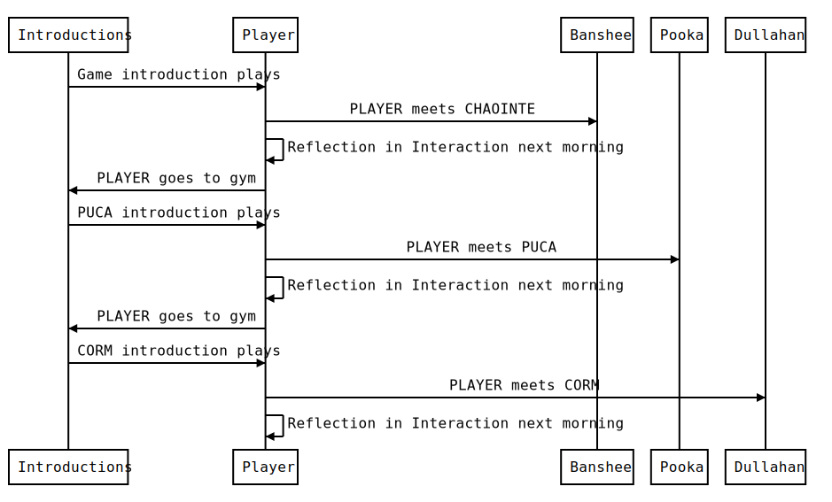

Sequence Diagram
This is the expected sequence of events that will take place for the beta release of the game. The events are not grouped in chronological order but instead are detailed in order of character interactions to make it easier to code these into the game.

Introductions
INT. GYM - DAY - TRIGGER: Character Creation Completed
Plays after the character creation acting as a tutorial for the game while introducing the PLAYER to ST. PADDY, their new job and the banshee. The PLAYER is limited to working at this time.
PLAYER
Finally arrived. Uncle Colin really pulled through for me here. Not sure I could have landed this gig without him. Better make sure to thank him soon. ’Tis been hard the last few weeks.
ST. PADDY
Ahh you finally made it. The name is Paddy. I’m the manager of this here joint. Tír na Sioga we call it.
PLAYER
I’m {{NAME}}, thank you for taking me on on such short notice.
ST. PADDY
Looking forward to having you on board.
Colin said it’s your first time coming to Inishsióg.
Good chap that one. What are your thoughts on the place so far? We have some good folk here; I’m sure you’ll all get along.
PLAYER
Land of the Fairies on Fairy Island, what a name! I hope this place isn’t filled with nutcases.
Only had a quick look around after the boat from Galway arrived. Seems a nice and quaint island.
ST. PADDY
It’s about time we get some help around here.
Grand, let’s put you right to work so.
PLAYER
Need to put my best foot forward here, can’t put this opportunity to waste.
Sounds good, where should I start?
ST. PADDY
Grand, you’re going to work with some fairly odd folk here but they are good at heart.
All ya need to do is chat and help ’em out. You’ll get paid for any day or night shift ya take on.
Make sure to treat ’em well, they need good people to spend some time with.
PLAYER
Ugh, I was hoping for a more low-key role here. Blending in with the wallpaper would be nice. Meeting new people is a real tough ask but I can’t let me family down again.
Ok, I’ll do my best.
ST. PADDY
You sure you’re up for this? Ya seem a bit pale.
PLAYER
Yep, leave it to me!
ST. PADDY
Alright, we don’t get many people in here. It’s rare to see more than one person come in sometimes.
Seems like today Chaointe Doran dropped by. She’s a timid spirit that struggles with conversation but she really likes to talk.
If you take it slow, I’m sure she’ll warm up to ya in no time.
PLAYER
Wow shes a looker but she does seem fidgety about my presence here. If Paddy didn’t point her out I’m not sure I’d have seen her. Her presence seems so faint.
ST. PADDY
The people she gets to know don’t stick around for long so take care to be a good attentive person she can lean on.
PLAYER
The way he said that first part sent chills down my spine. ’Tis odd but it can’t be that bad right?
ST. PADDY
Your job today is to introduce yourself and help her out. O’ am countin’ on ya, good luck kid.
Take care now, am off to cater my pride and joy so. Oh ho ho! Paddy’s Pub we’ll make you great again now that I have more time.
PLAYER
Paddy waddled off humming such a joyful tune; I wonder what it was. Alright time to get to it. It’s not like Chaointe bites, right?!
The next day they will have a choice of where they want to head during the day.
INT. GYM - DAY/NIGHT - TRIGGER: Entered the gym to work a second time
The Player enters the Gym to work for a second time. St. Paddy introduces the second character who is a pooka.
ST. PADDY
Welcome back, good to have ya here again. Ready for another day at work?
PLAYER
He sounds way too happy to see me. Something tells me he’s about to run off again and leave me to deal with the shortie in the corner.
Aye Aye Captain!
ST. PADDY
Lovely enthusiasm, I see you’re already staring down Monsieur Púca Cleasaí.
Ya know its rude to stare right, tho he’d do the same. All I can do is hope your not two peas in a pod.
He’s a bit of a trickster you see. Whatever you do, don’t let him push you about OK.
PLAYER
I nodded back at Paddy and wondered if this guy might be a kindred spirit.
ST. PADDY
With this one you have to make sure you don’t let the peer pressure get to you. Don’t want to do things you’ll regret after all.
If you’re not up for this your always free to leave and come back another day.
Alright, am off to my home sweet home for a pint.
PLAYER
What a man, so much joy but hes only got the pub on his mind. I wonder if I’ll ever have a place like that.
See you soon boss!You now have the choice of working or doing something else entirely. Waking into a location will not lock you out of doing other things anymore.
INT. GYM - DAY/NIGHT - TRIGGER: Entered the gym to work a third time
The Player enters the Gym to work for a third time. St. Paddy introduces the third character who is a dullahan. The scene is a bit tense as this is is the first time the player outright finds out the people here aren’t human.
PLAYER
A-Ahhh, t-that parson’s h-head i-is…
Before I could finish my sentence, Paddy put his hand over my mouth to stop me. All I could see was the severed head glaring at me from a distance.
ST. PADDY
C’mere to me, whatever your about to yell stuff it down deep and don’t. We don’t need this beautiful day going arseways.
PLAYER
I gulped holding my fear back. Paddy’s demeanour shifted from the usual happy go lucky caring self. What is this, should I leg it while I still can?
ST. PADDY
Calm down kid, I’m sure you’ve realized it by know. Everyone who comes here ain’t exactly human but they are good people.
Our little lady over there is the headless rider herself, Crom Dubh. Try not to cross her as she’s got a tendency for violence.
PLAYER
Paddy is right, I already knew this place was odd. Knowing I’m not seeing a dead body has put me slightly at ease.
ST. PADDY
Yeah, you’ll be fine. Today might be a tough day on the job but you’ve got this, after all you already meet some inhuman guests of ours. Just make sure to apologize for that outburst.
PLAYER
I guess I’m gonna need to figure out whats up with this town. It’s so odd that I may just fit right in. These misfits may be my kind of odd but should I really be here?
W-will do. Sorry for making things uncomfortable.
ST. PADDY
’Tis grand, reflecting on and rectifying our mistakes is important.
I’ll leave ya to it so. Am off to take care of da pub.
PLAYER
No humming today. I really soured the mood. Not a great way to start another day on the job. I should at least go and apologize.
Player Events
INT. HOME - MORNING - TRIGGER: Morning after meeting the banshee
The PLAYER reflects on their meeting with CHAOINTE.
Good Choice
PLAYER
I woke up early with my muscles aching from the exercise. It feels good to have exercised yesterday. The sleep felt so much better than usual.
Chaointe was so nice. I should make sure to exercise with her again soon. I really got to learn more from her if I’m going to do a good job at the gym.
Alright! Time to put this new found energy to good use. Should I go to work or visit the town? Paddy doesn’t seem to mind which shifts I take.
Bad Choice
PLAYER
I woke up early with my muscles aching from the exercise. My sleep was awful and I’m aching so much.
I still feel weird about the interaction I’ve had with Chaointe. Maybe I can still make it up to her.
Ehhh, I guess I should get up and try to get out of bed. The parents would be so disappointed If I failed at another job. I wouldn’t be able to face uncle Colin after this either.
INT. HOME - MORNING - TRIGGER: Morning after meeting the pooka
The PLAYER reflects on their meeting with PUCA.
Good Choice
PLAYER
We made a bit of a mess yesterday with Púca. Can’t believe I got tricked into it for the mans enjoyment. I’m glad we sorted it out so quickly.
Leaving the gym in a better state then we started was great. We got to clean some stuff that doesn’t usually get done.
Bad Choice
PLAYER
That little garden gnome of a man had me doing to much extra work last night. I can’t believe I spent so much extra time cleaning up that mess on my own.
I hope Paddy isn’t too annoyed with the slight re-modelling. I couldn’t fix it all alone.
INT. HOME - MORNING - TRIGGER: Morning after meeting the dullaghan
The PLAYER reflects on their meeting with Crom.
Good Choice
PLAYER
I should meet Crom again. She must have some interesting stories to tell being a dullahan and all.
I wonder what the other gym goers are. It’s a delicate subject so I should take care.
Bad Choice
PLAYER
I gotta make sure my head doesn’t come off next time I meet Crom. She seems like shes got a violent streak going.
I wonder what creatures the other gym goers are. I should avoid offending them too.
INT. HOME - MORNING - TRIGGER: On completing 1/3 of the character events
The PLAYER has well and truly accepted their role at the gym. It’s starting to seem like they may have found a place where they belong. The PLAYER and ST. PADDY have a chat with some banter while PADDY checks in on the PLAYER.
N/A - Not in scope for beta release
INT. HOME - MORNING - TRIGGER: On completing 1/2 of the character events
The PLAYER meets paddy they catch up. They discuss the players success so far but conflict arises as ST. PADDY is looking to retire and move on from managing the gym.
N/A - Not in scope for beta release
INT. HOME - MORNING - TRIGGER: On completing 2/3 of the character events
The retirement is looming. The PLAYER and ST. PADDY have a heated discussion about the gym. The PLAYER is willing to take over but PADDY is not sure if a changeling is fit for the job revealing the main characters true nature. Doubt settles in and the conflict is at its peak. The players past is also revealed.
N/A - Not in scope for beta release
INT. HOME - MORNING - TRIGGER: On completing all character endings
On successful completion of all character events without bad endings, The PLAYER and ST. PADDY meet once more. PADDY is impressed with the players determination to help others and decides that the PLAYER is fit to take over. The story comes to a close.
N/A - Not in scope for beta release
Banshee Events - Chaointe Doran
The Banshee’s name is Chaointe Doran. It roughly translates to Lamenting Wanderer.
INT. GYM - DAY - TRIGGER: First Day At Work
PLAYER
Hey, my name is {{NAME}}. I’m new here. How can I help you today?
CHAOINTE
H-Hi, I-I’m C-Chaointe Doran. It’s nice to meet you {{NAME}}. I’m here to work out. W-would you like to join me please?
PLAYER
Yeah sure.
We started our workout. An uncomfortable silence loomed over us and the exercising feels excruciating. Chaointe is fidgety and looks like she has something to say but isn’t comfortable. I should break the silence.
PLAYER CHOICE: As I keep going, I blurt out:
A. This exercise is tough. How are you managing?
CHAOINTE
I’m doing well b-but you seem to be struggling a bit. Y-Your form is off. You don’t do this often, do you?
PLAYER
Yeah you’re right, I don’t work out much so I may not be the best option to look after this place.
CHAOINTE
Don’t worry, it will take some effort but I’m sure you’ll improve in no time.
PLAYER
Chaointe helped me improve my form and as we continued to exercise, it was exhausting but it felt much better.
Thanks so much, this feels a lot better now.
CHAOINTE
N-no problem. Thanks for working out with me. L-let’s do it again.
PLAYER
Looking forward to it. See you soon.
Chaointe left with a spring in her step. I finish cleaning up and head home to sleep
B. Whats up? Spit it out already!
CHAOINTE
I-it’s n-nothing. I’m so s-sorry.
PLAYER
No need to apologize. Let’s keep pumping iron.
The awkward silence continued for the remainder of the workout. I’m exhausted and aching all over.
Phew, glad that’s done.
CHAOINTE
Y-yeah, I need to head off now. Bye.
PLAYER
Chaointe left swiftly, leaving me wondering what she had to say. I finish cleaning up and head home to sleep
INT. PUB - Night - TRIGGER: First event completed
N/A - Not in scope for beta release
INT. CAFE - DAY - TRIGGER: Second event completed, Met Pooka
N/A - Not in scope for beta release
INT. GYM - DAY/NIGHT - TRIGGER: Third event completed, Met Dullahan
N/A - Not in scope for beta release
EXT. STREET - NIGHT (Forced) - TRIGGER: Fourth event completed, Friendship Threshold Reached
N/A - Not in scope for beta release
EXT. STREET - NIGHT (Forced) - TRIGGER: Fourth event completed, Friendship Threshold Not Reached
N/A - Not in scope for beta release
Pooka Events - Púca Cleasaí
The pookas name is Púca Cleasaí. It roughly translates to Goblin Trickster.
INT. GYM - DAY/NIGHT - TRIGGER: Second Day At Work
PUCA
Hi there tall one. What’s yar name?
PLAYER
Hey, I’m {{NAME}}. What about you?
PUCA
I’m the mighty Púca Cleasaí. Havn’t sen you around before; you new here?
PLAYER
For someone so short he seems to hold himself in high regard. It’d be nice to have his confidence.
Yeah, started recently and am here to help you out if needed.
PUCA
Good stuff. Since yar here to help lets sort this mess here out. This gym could use a slight re-modelling to improve the layout. Dear Paddy has too much on his head so this ill make his life easier.
PLAYER
The commandeering Púca didn’t need to convince me. I good swooped up by his charisma and didn’t think to question him at all.
Alright lets get to work.
PUCA
Good lad. Lets do this!
PLAYER
We painstakingly moved everything at the gym at Púca’s whim. What seemed a good idea initially turned into a big mess. I looked around and everything was placed haphazardly. I beautiful gym got turned into a tripping hazard on my watch.
PLAYER CHOICE: What should I do now?
A. Stop this maddness and fix everything even though It will take a long time
PLAYER
This isn’t working. We should stop and put it all back as it was before.
PUCA
B-But its so much fun messing with Paddy like this.
PLAYER
Messing?! Have some cop on that’s not how we should treat people!
My mind was rushing. I don’t like confrontation. Púca seemed impressed that I stood up to him as if he was messing with me and not Paddy.
PUCA
Alright, alright let’s sort this out so. Twas fun while it lasted.
PLAYER
Thanks.
We worked hard to fix the mess. It took longer than expecetd but the place was cleaner than before we started.
B. Keep going to avoid confronting Mr. Púca
PLAYER
We continued to work. The mess became worse. I’m in for it now. It’s time to wrap this up before It gets even worse.
There this should do it.
PUCA
Yeah, fine work today
Púca was grinning at me. He knows exactly what we had done here yet he also seems to be unsatisfied. Maybe I should have stopped him. I’ll tidy the place up before I head off for the day.
Common Dialog Post Decision
PUCA
That was hard work lad. Let’s have some fun again sometime. See you soon.
PLAYER
Bye, See ya around.
INT. RESTAURANT - DAY - TRIGGER: First event completed
N/A - Not in scope for beta release
INT. GYM - DAY/NIGHT - TRIGGER: Second event completed, Met Dullahan
N/A - Not in scope for beta release
INT. RESTAURANT - DAY - TRIGGER: Third event completed
N/A - Not in scope for beta release
INT. FOREST - NIGHT (Forced) - TRIGGER: Fourth event completed, Friendship Threshold Reached
N/A - Not in scope for beta release
INT. FOREST - NIGHT (Forced) - TRIGGER: Fourth event completed, Friendship Threshold Not Reached
N/A - Not in scope for beta release
Dullahan Events - Crom Dubh
The dullahans name is Crom Dubh as its known the be the Embodiment of this Celtic God.
INT. GYM - DAY/NIGHT - TRIGGER: Third Day At Work
CROM
Hello Mister “A-Ahhh, t-that parson’s h-head i-is…” detatched. I’m Crom Dubh.
You’ve probably already heard of me but who might you be?
PLAYER
H-Hi, I’m {{NAME}}. Just your average Joe who started working here recently.
CROM
Average…Interesting…You seem to have gotten over headless solders quicker then most. So what do you need?
PLAYER CHOICE: Crom doesn’t seem to worried about my outburst. What should I do?
A. Apologise, reflecting on your moment of panic.
PLAYER
I’m so sorry about my panicked outburst earlier. I assumed the worst. I thought someone had died.
CROM
Interesting, people usually jump like that from fear when they see me.
PLAYER
Well there was probably a small bit of that too when I seen you move.
CROM
That’s OK, you seem like an honest fellow. You also took the time to apologies to me too.
PLAYER
Thanks for being so accepting of my mistake. It won’t happen again.
CROM
No problem. I do love a good jump scare. Twas a bit of fun.
PLAYER
The apology went well. It seems like Crom is well used to this kind of thing. Makes me wonder what kind of life she must lead.
Do you need help with anything today?
CROM
No, just wrapping up my exercises. I’ll be done and gone soon. Let’s chat again some other day.
PLAYER
Sounds good.
I left Crom to her own devices while I tidied up and filled out some paperwork. Once she left I wrapped up too.
B. Ask to hold her head.
PLAYER
Could I maybe hold your head?
CROM
NO!…How dare you make such an insolent request. You must have a death wish.
PLAYER
I just made a bad situation worse. Crom is staring daggers at me and I worry my head may not stay on its solders for long either.
S-Sorry, I-I just…
CROM
You just what!? My patience is running thin. You ruined my exercising session. I should have you’re head for this.
Your lucky Patrick is in charge here. I owe him a debt of gratitude so I’ll let this one slide.
I’m heading off before anything else comes out of that fun-sized brain of yours.
PLAYER
Corm stomped away while I stood there in silence to avoid making things worse. Paddy, my savior I have failed thee. I tidied up and left for the day.
INT. PUB - NIGHT - TRIGGER: First event completed
N/A - Not in scope for beta release
INT. GYM - DAY/NIGHT - TRIGGER: Second event completed
N/A - Not in scope for beta release
INT. PUB - NIGHT - TRIGGER: Third event completed
N/A - Not in scope for beta release
EXT. STREET - NIGHT (Forced) - TRIGGER: Fourth event completed, Friendship Threshold Reached
N/A - Not in scope for beta release
EXT. STREET - NIGHT (Forced) - TRIGGER: Fourth event completed, Friendship Threshold Not Reached
N/A - Not in scope for beta release
References
- Curran, B. and Whitson, A. (2007) A field guide to Irish Fairies. Belfast: Appletree Press.
- Quinn, S. (2024) The Faerie Isle: Tales and Traditions of Ireland’s Forgotten Folklore. London: Walker Books Ltd.
- Jackson, J.K. and Fitzgerald, K. (2022) Irish folk & fairy tales: Fables, folklore & ancient stories. London: Flame Tree Publishing.
- Yeats, W.B. (1888) Irish fairy tales and Folklore. New York, NY: Clydesdale Press.